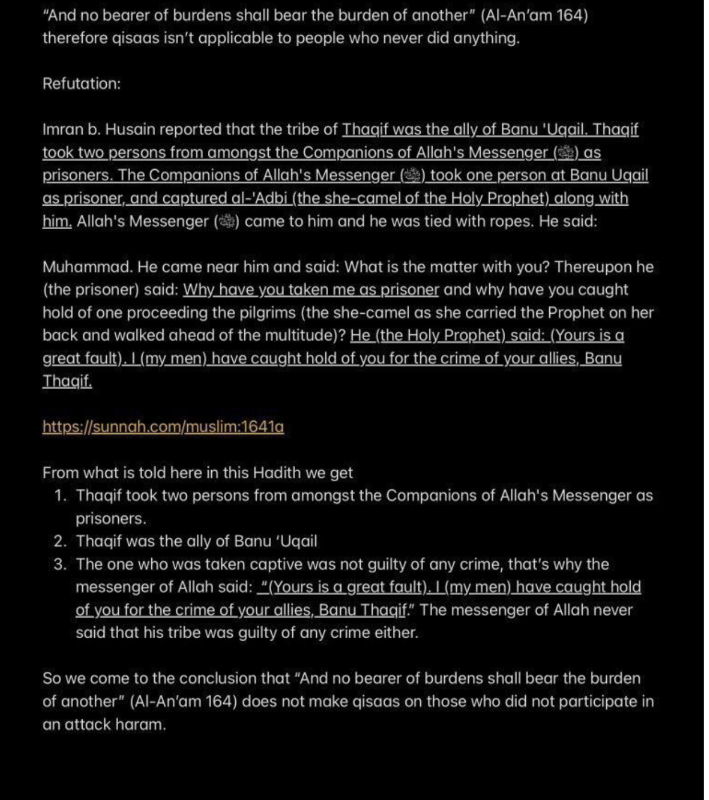
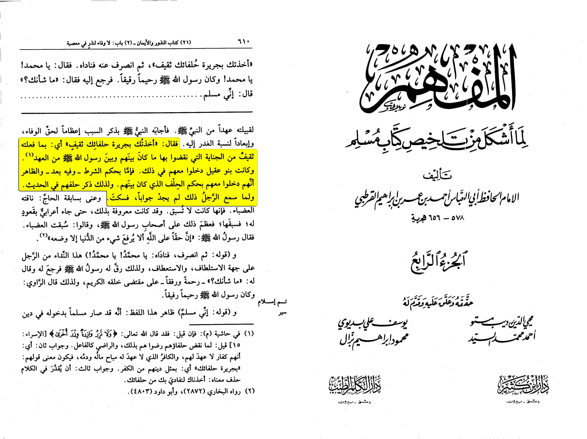
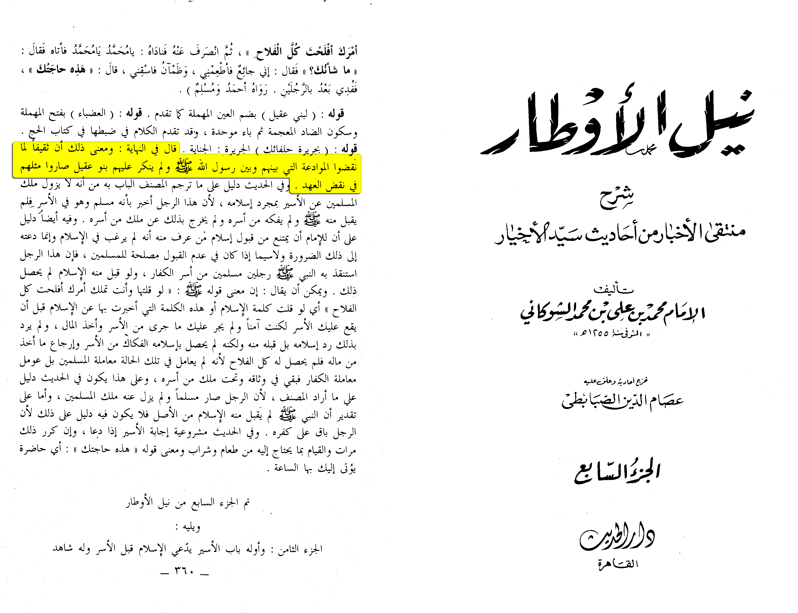

Some extremists tried to use this hadith to prove non combatants can be killed, is this true?

irst we have to keep some things in mind:
The source of slaves is only captures of war (Sahih al-Bukhari 2227), The non Muslims such
as old people people who didn’t participate in war like farmers aren’t to be enslaved.
The ruler isn’t obligated to enslaved (47:4) the non Muslims dhimis aren’t enslaved (Sahih al-Bukhari 3052)
“The wisdom behind slavery is breaking the evil of the disbelievers and getting them away of fighting field”
[Al-Musu’ah al-fiqhiyah al-Kuwaitiyah 4/196]
Some fuqaha’ suggested priests old people aren’t even to be enslaved (Ad-Dusuki).
Now was the person in this hadith really innocent lets check the sharh (explanation):
Imam Al-Qurtubi (d. 656 AH) states:
« "He said, "I catch you by the agreement of your compatriots from Thaqif, meaning by what
they did of the sin they committed violating the agreement between them and the Messenger of Allah
(peace be upon him). The Banu Uqayl entered into this as well. Either by the ruling of the condition,
in which case there is a difference of opinion, or they entered into it with them by virtue of the oath
that was between them. That is why their agreement was mentioned in the hadith. When the man heard this,
he had no answer and fell silent."[1] »
[1]: and in al-hashiyah it was stated when there companions broke the covenant they agreed to
it so they became like them.
•📓 [Al-Mufhim | (4/610)]

Ash-Shawkani (d. 1255 AH) states:
« And he said in an-nihayah and the meaning of this is that, when Thaqif broke the covenant
between them and the messenger of Allah (may Allah bless him and grant him peace) Banu uqail
didn’t object to this so they became like them in breaking the covenant. »
•📓 [Nayl al-Awtar | (7/360)]

Objections
Q: How would a woman who just got caught from war accept to sleep with a man
A: That is a pure lie As our Hanafi scholars have stated that it is impermissible to have intercourse with the woman
if her husband is caught in the same capture as for her husband not being with her than it is ok if you object to this
is I’ll let non Muslims respond:
John McClintock said:
Women who followed their father and husbands to the war put on their finest dresses and ornaments previous to an engagement,
in the hope of finding favor in the eyes of their captors in case of a defeat. (John McClintock, James Strong, "Cyclopædia
of Biblical, Theological, and Ecclesiastical Literature" [Harper & Brothers, 1894], p. 782)
Matthew B. Schwartz said:
The Book of Deuteronomy prescribes its own rules for the treatment of women captured in war [ Deut 21:10-14 ] .
Women have always followed armies to do the soldiers' laundry, to nurse the sick and wounded, and to serve as prostitutes
They would often dress in such a way as to attract the soldiers who won the battle. The Bible recognizes the realities
of the battle situation in its rules on how to treat female captives, though commentators disagree on some of the details.
The biblical Israelite went to battle as a messenger of God. Yet he could also, of course, be caught up in the raging tide
of blood and violence. The Western mind associates prowess, whether military or athletic, with sexual success.
The pretty girls crowd around the hero who scores the winning touchdown, not around the players of the losing team.
And it is certainly true in war: the winning hero "attracts" the women. (Matthew B. Schwartz, Kalman J. Kaplan, "The Fruit
of Her Hands: The Psychology of Biblical Women" [Wm. B. Eerdmans Publishing, 2007] , pp. 146-147)
Also:
“Muhammad bin ‘Ali narrated: “When it was the day of Awtas, the (disbeliever) men fled to the mountains and their
women were taken as captives.” (Ahkam al-Qur’an, Dar al-Kotob al-Ilmiyya, Beirut, 1994 volume 2 page 173)
As for those mentioned in the hadith they became muslim and some even married the Sahaba and they were freed proof:
The answer is simple it is because they became muslim and some of them married the sahaba after seeing the goodness of Islam
Narrated Marwan and Al-Miswar bin Makhrama:
When the delegate of Hawazin came to Allah's Messenger (ﷺ) declaring their conversion to Islam and asked him to
return their properties and captives, Allah's Messenger (ﷺ) got up and said to them, "There Is involved in this matter,
the people whom you see with me, and the most beloved talk to me, is the true one. So choose one of two alternatives:
Either the captives or the properties. I have been waiting for you (i.e. have not distributed the booty)." Allah's Messenger (ﷺ)
had delayed the distribution of their booty over ten nights after his return from Ta'if. So when they came to know that Allah's
Messenger (ﷺ) was not going to return to them but one of the two, they said, "We prefer to have our captives." So Allah's
Messenger (ﷺ) got up amongst the Muslims, and praising Allah as He deserved, said, "To proceed! Your brothers have come
to you with repentance and I see (it logical) to return their captives. So, whoever of you likes to do that as a favor then he
can do it. And whoever of you likes to stick to his share till we give him from the very first booty which Allah will give us,
then he can do so." The people said, "We do that (i.e. return the captives) willingly as a favor, 'O Allah's Messenger (ﷺ)!"
Allah's Messenger (ﷺ) said, "We do not know which of you have agreed to it and which have not; so go back and let your chiefs
forward us your decision." They went back and their chief's spoke to them, and they (i.e. the chiefs) returned to Allah's Messenger (ﷺ)
and informed him that all of them had agreed (to give up their captives) with pleasure, and had given their
permission (i.e. that the captives be returned to their people). (The sub-narrator said, "That is what has reached me about the
captives of Hawazin tribe.")
(Sahih al-Bukhari 4318, 4319)
Q: Was ransom abroagated ? If not then why not do it
A: related to why not freeing the answer is in the following quote
“The wisdom behind slavery is breaking the evil of the disbelievers and getting them away
of fighting field”
[Al-Musu’ah al-fiqhiyah al-Kuwaitiyah 4/196]
If he freed them they would have rebelled again
Was man (grace) or fida’ (Ransom) of captives of war abroagated
1.) ibn abbas said that 8:67 was before the Muslims were plenty then it got abroagated by 47:4
Abi Abdullah Al-Qurtubi:
“That the verse is not abroagated and the imam has the choice either ways ali bin abi talha
narrated it from ibn abbas that is the saying of a lot of scholars such as ibn ‘umar al-Hassan al-basri
and ‘ataa’ and it is the madhab of malik and ash-shāfi’ie and at-thawri and al-awza’i and Abi ‘ubayd
and others and it is the correct opinon as the prophet did it so the rightfully guided caliphs.”
[Al-Jāmi’ li Ahkam Al-Qur’ān volume 18 pp.246-247]
In sum: The person in the hadith was caught because he also broke the covenant as we projected and for objections scroll up.